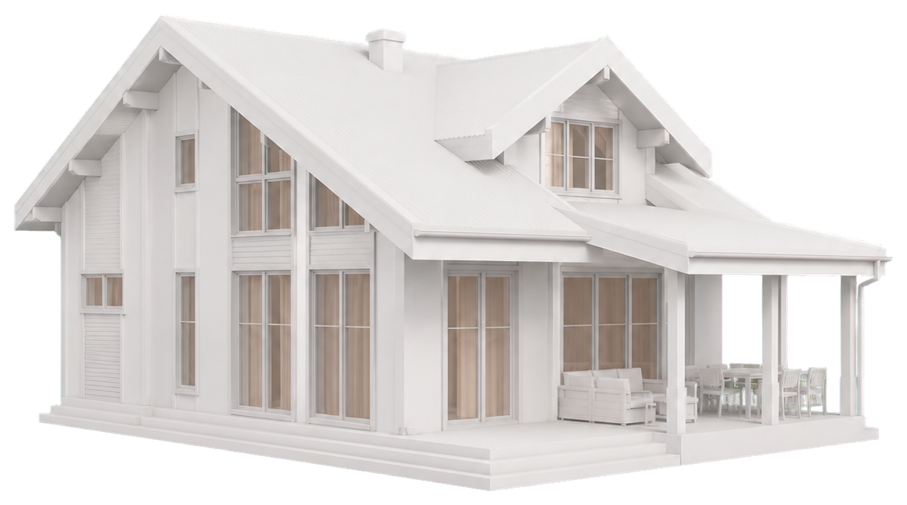

01
BIM
Модель, элементы, объёмы и версии проектных решений.
Геометрия объектаЕдиная среда управления строительством
AXMA объединяет BIM‑модель, CRM и ERP. Каждый участник видит только актуальное — и понимает, что делать дальше.

Изменены объёмы
Бетон и арматура · этаж 2
AXMA · цифровой двойник объекта
01 / Зачем AXMA
Изменение в модели, поставке или графике не теряется в переписках и таблицах. AXMA сопоставляет данные, находит зависимые элементы и сообщает о риске нужным людям.
02 / Платформа
01
Модель, элементы, объёмы и версии проектных решений.
Геометрия объекта02
Заказчики, обращения, карточки проектов и история взаимодействия.
Работа с клиентами03
Поставки, номенклатура и фактические данные по ресурсам.
Материалы и снабжениеBitrix24, корпоративный чат и документы — в одной среде. AXMA связывает переписку, файлы и события проекта, сохраняя контекст каждого решения.
03 / AXMA в действии
Система отслеживает изменения между контурами и превращает их в понятные действия.
Инженер МТО меняет дату поставки.
Находит фермы в модели и связанные работы в КСГ.
Нужные участники получают push-уведомление о риске.
04 / Для каждого — своё главное
Прораб / подрядчик
На объекте можно открыть нужный элемент, понять сложную конструкцию и сразу задать вопрос по нему проектировщику.
Алексей, прораб
Окно W-04: уточните отметку проёма
Выберите элемент в модели
05 / Контекст вместо «сломанного телефона»
Сообщение о проёме, пилоне или ферме сохраняется прямо в контексте модели. У вопроса всегда есть точный адрес, история и ответственный.
Запросить демонстрацию ↗︎AXMA для вашей стройки